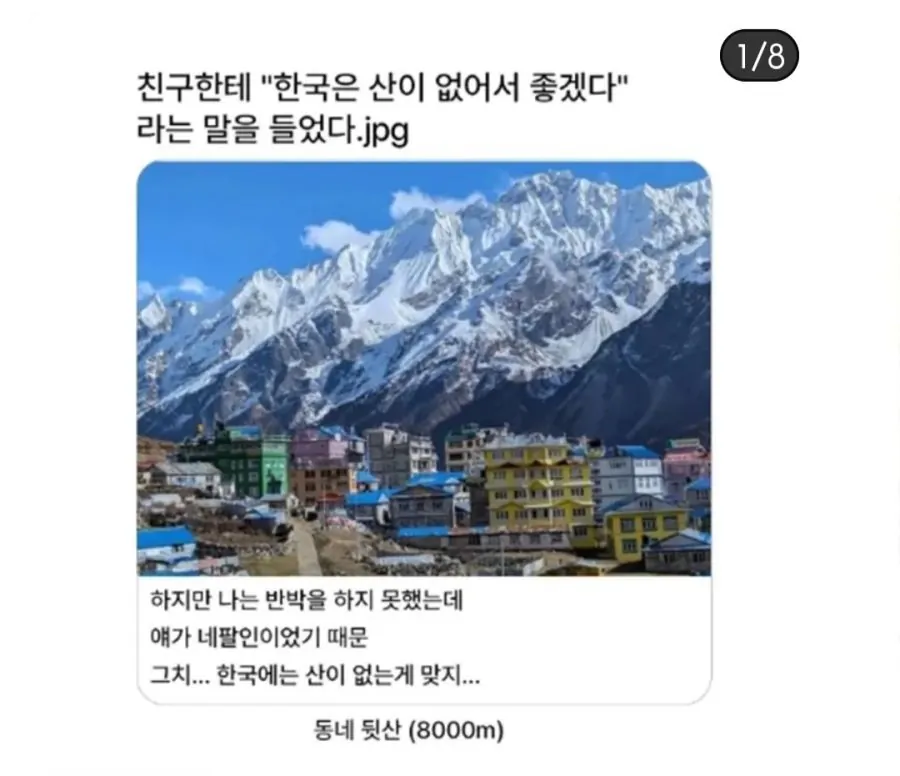

한국은 산이 없어서 좋겠네
댓글
그래서 못했어
도로를 뚫는다고요?
그냥 산 사이로 다니는게 길이지
저긴 비행기도 돌아서 가더라
ㄹㅇ 비행기로도 못넘고 돌아 가는게 더 공포임 ㅋㅋ
스위스는 어케했지... 신기하네
거기도 알프스 산맥 내에서는 안살아.. 그 밑에 평지에서 살지 ㅋㅋㅋ
걔네는 돈이 많으니까.
스위스 사람들이 '스위스' 라는 글자가
산사이에 창을 들고 있는 사람 같아서 용병 국가였던 자신들을 표현한것 같다고 좋아한단 말이 갑자기 떠오르네.
귀엽구만 ㅋㅋㅋ
오.. 쩐다..
이거레알이더라 ㅋㅋ
가서 현지인한테 물어보니까 알더라
걔들도 계곡 따라 땅 조금씩 있는곳에 모여사는거같아.
일단 산자체도 높으니까 계곡도 생각보다 스케일 큰것같아.
십여년전에 한번 가봤을때 유심히 봄.
스위스는 네팔마냥 히말라야 자체가 아니고 알프스 산맥 위쪽동네임 ㅋㅋ 아래쪽은 이탈리아 그리고 북쪽 프랑스 접경에 비교적 낮은 산들 있고
취리히 베른 로잔 이쪽 윗부분은 한국이랑 비슷한데 중간중간 호수도 많거 평지랑 언덕도 군데군데 있음
네팔은 그...일단 너무 높기도 하고 그냥 히말라야 자체라 개발을 할수가 없지 ㅋㅋㅋ핵 터트려서 산 깎는다 해도 수만발 필요할듯
내가 스위스 3개월 살았는데 공기가 조오오오온나 깨끗해서 여드름 싹 사라짐 알프스가 다 정화해주는듯 ㅋㅋ 나중에 돈 많이 벌면 스위스 가서 살아야지
그래서 국가발전도 힘들어서 용병으로 몸팔고 다녔잖아
안데스산맥에 걸쳐있는 남미 국가들도 국토개발은 조금 있는 평지 위주로만 되어있음...
산악 지형에 바다도 없고 위에는 중국 아래는 인도
최악의 위치 선정
네팔? 내다리
플로리다사람:한국은 도시에 왤케 산이 많니?
해발 4천이하는 언덕이라 부르기로 했어요
한국이 똥땅똥땅 하는데 진짜 똥땅은 네팔같은데지. 바다없는 내륙국, 대부분 산지라 농사짓기 힘듦, 산세가 너무 험해서 철도조차 못 놓고 항공기 조차 다니기 힘든 땅.
몽골
몽골이 시진핑 푸틴한테 포위당한 내륙 국가이긴 하지만 자원이 많음, 몽골이 힘든 이유는 인구수랑 수출 길목을 틀어막고 있는 시진핑 때문이지 나라 자체는 똥땅이 아님
입지도 같이 평가해야 하지 않나 싶다. 바다 접하지 않은 내륙국은 진짜 별로인듯
날씨가 조온나 춥지 않나 ?
개마언덕
히말라야 등산객 수익 좋으려나 모르깄네
애매하게 높지도 않고 이쁘지도 않은 산만 존나 즐비함
융프라우나 후지산같이 이쁜설산도 없고 존나 다 애매해
너무 익숙해져서 그런거
별로 높지 않은 아기자기한 산 많아서 좋다는 사람도 있고
너무 크고 넓을수록 횡한 곳도 많은 지역 사람들이 보기에는
식생이 오밀조밀하게 모여있고 생명력 넘치는 한국산을 예쁘다고 보기도함.
여름 가을엔 진짜이쁘긴함
원래 그동네 사는 사람들은 자기동네의 매력을 못 느낀다고 하더라 ..
내륙산지 지형 험한 나라는 예로부터 전투력이 최강이었다: 스위스용병, 구르카 등
칠레 간적 있는데 차타고 도시 들어가는데 저 멀리 산이 보이는데 존나 높음. 내 상식상 하늘이 여기있음 산은 이쯤 있는데, 이건 산이 하늘에 있는 느낌이었음. 한국인이 평생 경험하지 못한 높이였음
근데 산뚫는 기계인가? 동굴 뚫는 기계있잖아 지하철 같은거 낼때 쓰는거 그거 쓰면 안됨? 산에 터널내는거 일도 아닐거 같은데?
TBM 그것도 설치해 놓으면 지 혼자 막 돌아가는 게 아니라 조금 돌리다 날 다 교체해줘야 하고 쉽지 않음
더구나 저런 데는 터널 연장이 엄청 길어져서 감당할 수 있는 비용이 아님
우리 새들은 모두 들새였구나?
평지의 왕 백두들 호랑이!!
하지만 네팔 외노자 반장은 같이 차타고 나갈때마다 강원도 너무 이쁘다고 즐거워함
저기 이번 재난이 산 정상 빙하가 3천미터 추락해서 떨어졌다던데 그래서 그 충격량이 진도 5라던가
언덕이 몇 개 있습니다..
이번 주말에 뒷산으로 야유회나 갈까?(생명보험을 가입하며)
그래 저사람 기준으로는 우리나라 웬만한 산은 과속방지턱 수준이겠지
산(언덕)
저사람들한테 북한산 백운대쯤은 동네 마실나온거겠지?
저 사람들도 평지 살아요
사람이지 산양이 아니예요
"작다고 산이 아니면 넌 뭐 드워프냐?"
한국도 산때문에 국토개발이 어려운데 저런나라는 진짜 어카냐 도로 하나 뚫는 것도 난이도 헬이겠는데